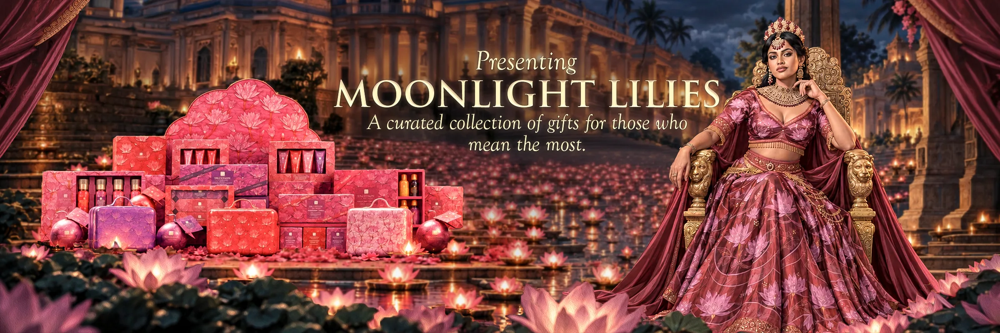
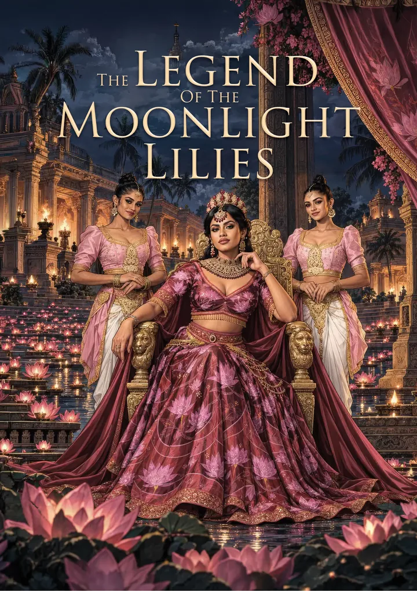
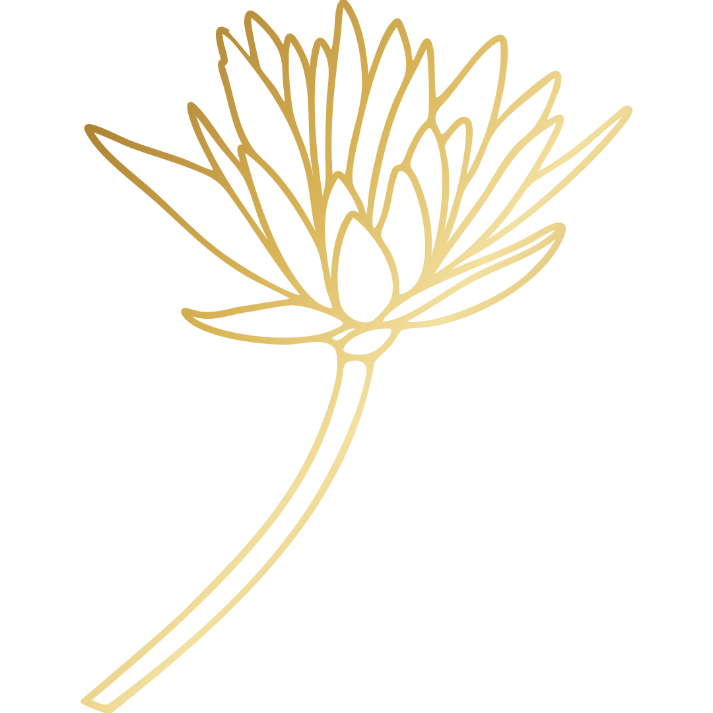

Spa Ceylon’s festive collection for 2026. This season, the legend comes alive once more.
The Legend
The Legend of the Moonlight Lilies
A queen, a sacred lake, and a beauty meant to be shared: the tale behind this year’s gifts.
-
The Elder’s Tale
In the Kingdom of Ceylon, a young princess grew up on an old promise: the Moonlight Lilies bloom only when a great blessing draws near. Years later, crowned Queen, she still carried it in her heart.
-
The Lake Awakes
On the night of the full moon she led a procession of lamps to the sacred waters. As the moon rose, the lilies opened one at a time, until the whole lake shone with flowers of light.
-
Not Ours to Possess
The court wanted the blooms for the palace gardens and the temples. The Queen refused. No one would take a single lily: they bloomed for everyone, and in the water they would stay.
-
From Many Hands
Instead, she called the finest hands in the land. Painters, weavers, jewellers, potters and perfumers studied the lilies and carried their beauty into silk, gold, clay and fragrance, without disturbing a petal.
-
Gifts of Love and Gratitude
Their creations travelled from palace to village, shared as gifts between families and friends. The lake’s wonder became something people could give one another, and that is where this collection begins.

The Collection
Like the artisans in the legend, each gift carries the lilies’ beauty into something you can give.
View the collection